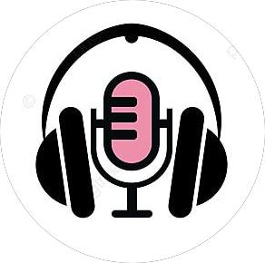

Bienvenue dans l'univers sonore de Aabbir. Laissez-vous emporter par des histoires captivantes, des voix envoûtantes et des musiques originales. Que vous cherchiez à vous détendre, à vous informer ou à vous divertir, notre podcast est fait pour vous.
.أهلاً بكم في عالم صوت عَبِّر. دعونا نأخذكم في رحلة صوتية مليئة بالقصص المشوقة والأصوات الساحرة والموسيقى الأصلية. سواء كنتم تبحثون عن الاسترخاء أو الحصول على المعلومات أو الترفيه، فإن بودكاستنا هو الخيار الأمثل لكم
Aabbir est bien plus qu'un simple podcast, c'est notre passion commune de dévoiler les mondes cachés et d'éveiller la curiosité. Il touche les profondeurs de vos émotions et nourrit votre esprit. Nous nous efforçons de vous offrir un contenu riche en informations, alliant plaisir et connaissance. Notre équipe spécialisée travaille dur pour simplifier les concepts complexes et les présenter dans un langage fluide et agréable, car nous croyons en l'importance de partager le savoir avec les autres. Nous nous engageons à offrir une qualité sonore et de production irréprochables, et nous sélectionnons des sujets variés pour répondre aux intérêts d'un large public.
.عَبِّر هو أكثر من مجرد بودكاست، إنه شغفنا المشترك بالكشف عن العوالم الخفية وإثارة الفضول يلامس أعماق مشاعركم ويغذي روحكم. نسعى جاهدين لتقديم محتوى غني بالمعلومات، يجمع بين المتعة والمعرفة. فريقنا المتخصص يعمل بجد لتبسيط المفاهيم المعقدة وتقديمها بلغة سلسة وممتعة، وذلك إيمانًا منا بأهمية مشاركة المعرفة مع الآخرين, نلتزم بجودة الصوت والإنتاج، ونحرص على اختيار مواضيع متنوعة تلبي اهتمامات شريحة واسعة من المستمعين